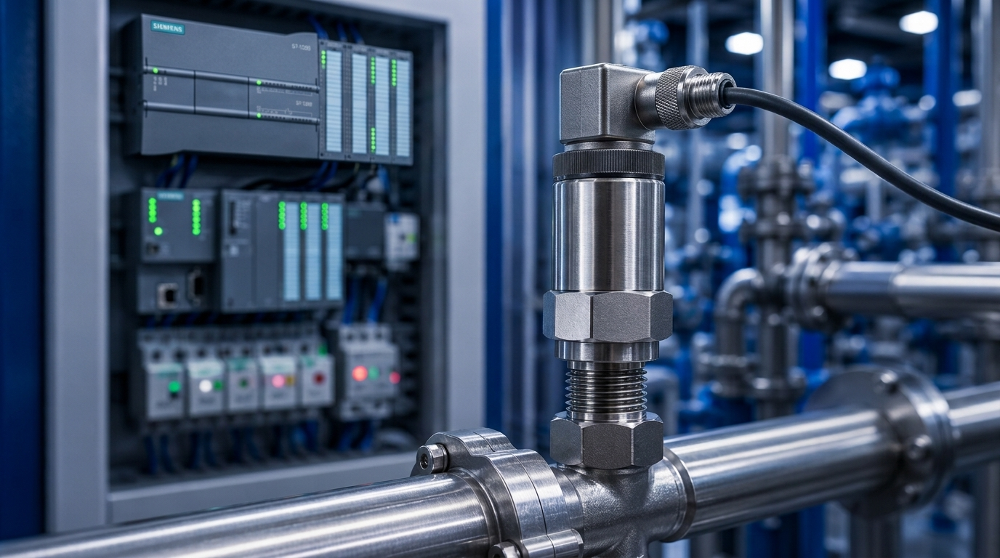
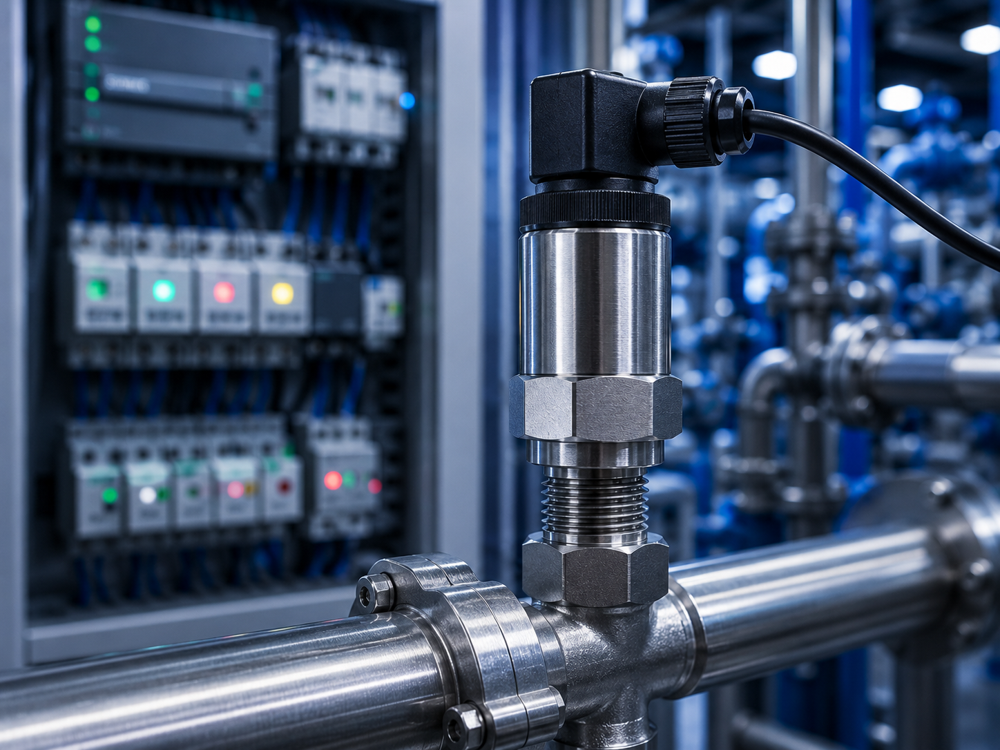
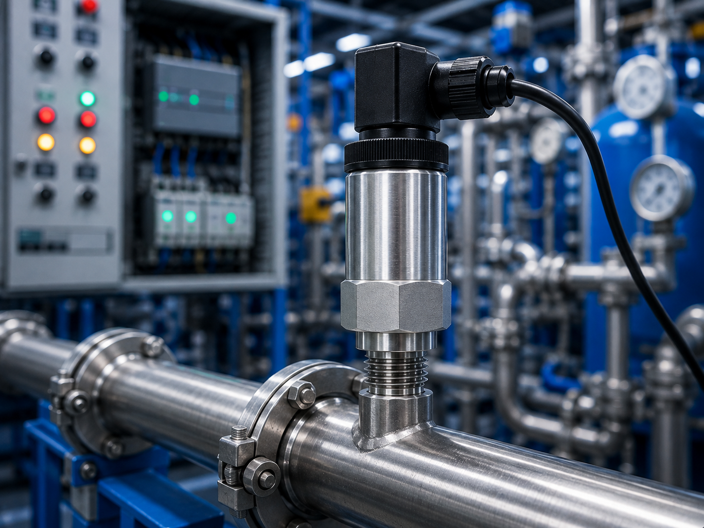
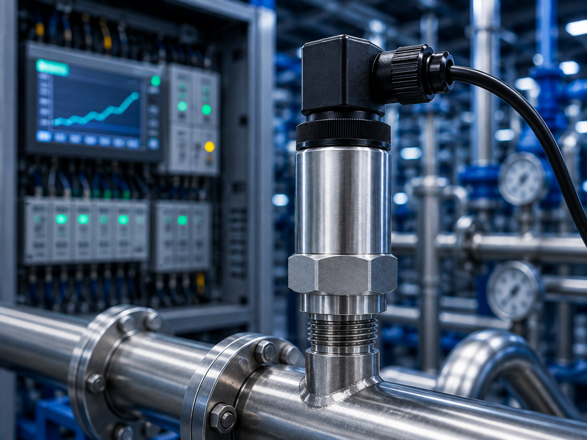
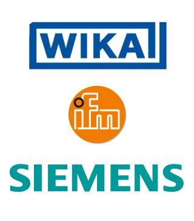

Pressão
Monitore e controle a pressão com precisão em sistemas industriais.

Conceito e Aplicação
O sensor de pressão é um dispositivo utilizado para medir a pressão de líquidos ou gases e converter essa informação em um sinal elétrico para monitoramento e controle. Os sensores de pressão são amplamente utilizados na indústria para garantir o controle e a segurança de processos que envolvem fluidos.
- Medição da pressão de líquidos e gases;
- Conversão da pressão em sinal elétrico;
- Monitoramento de tubulações e reservatórios;
- Integração com CLPs e sistemas de automação.
Informações Complementares

Funcionamento
O sensor de pressão detecta a pressão de líquidos ou gases e envia um sinal para o sistema de controle, permitindo o monitoramento em tempo real.
Saiba Mais
Aplicações
Aplicado em sistemas industriais para monitorar a pressão de líquidos e gases, garantindo controle, segurança e eficiência durante o funcionamento dos processos.
Saiba Mais
Vantagens
Proporciona maior segurança, precisão e confiabilidade no monitoramento da pressão, contribuindo para a eficiência e a proteção dos processos industriais.
Saiba MaisEmpresas
As principais empresas que fabricam sensores de pressão são referências no setor de instrumentação e automação industrial. Em 2025, diversas marcas se destacam pela qualidade, precisão e confiabilidade de seus sensores para aplicações industriais.
A WIKA, a Siemens e a ifm electronic são algumas das principais fabricantes de sensores de pressão utilizados em processos industriais, sistemas pneumáticos, hidráulicos e equipamentos automatizados. Seus produtos são reconhecidos pela alta precisão, durabilidade e integração com sistemas de automação.
WIKA: Empresa especializada em instrumentação industrial e líder mundial na fabricação de sensores e transmissores de pressão. Seus equipamentos são amplamente utilizados em processos industriais, sistemas hidráulicos e pneumáticos.
SIEMENS: Multinacional de tecnologia e automação que desenvolve sensores e transmissores de pressão para aplicações industriais, oferecendo soluções de alta precisão para monitoramento e controle de processos.
IFM ELECTRONIC: Empresa especializada em sensores industriais e automação. Fabrica sensores de pressão para sistemas pneumáticos, hidráulicos e processos industriais, destacando-se pela confiabilidade e integração com tecnologias como IO-Link.
